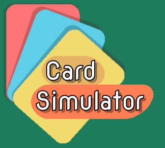
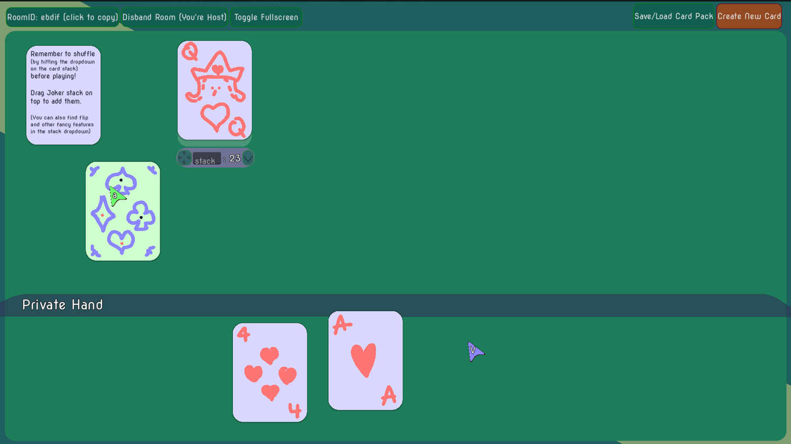
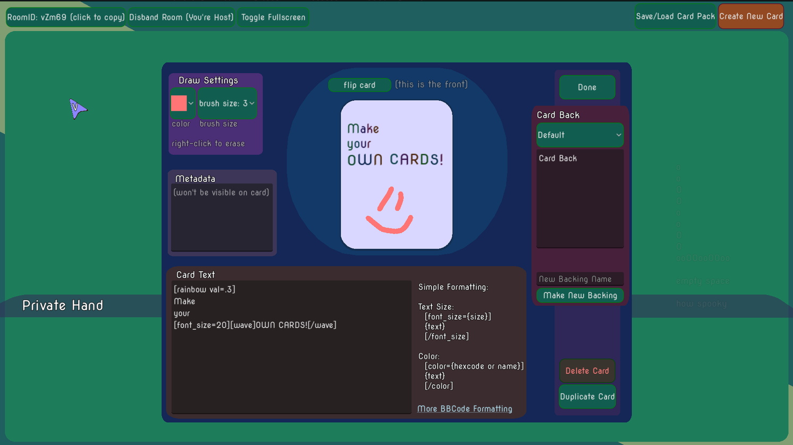
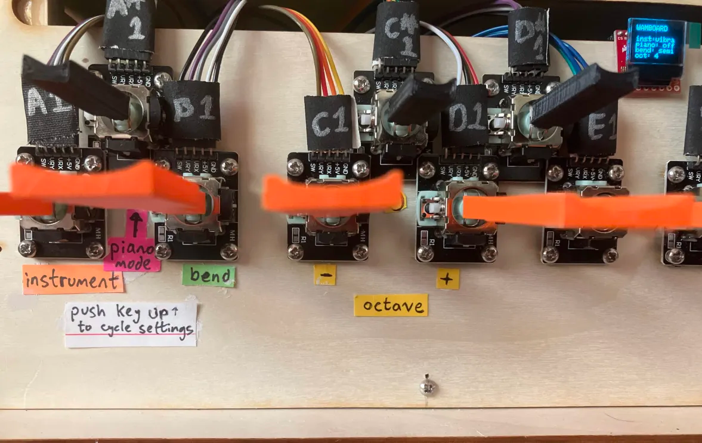
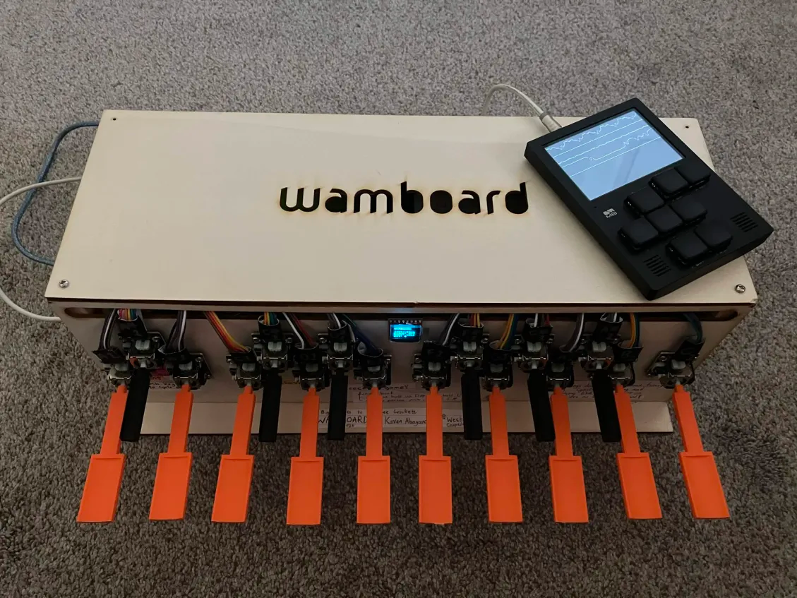

It's the end of July, and I finally got around to working on the Wamboard!
But first,
I will detail and unrelated project of mine that delayed me from working on the Wamboard.
Over the last ten months, I've made this really silly and weird card game (called Notsu) with my friends. The idea is that everyone who ever plays can make cards for it if they want.
There are over 100 cards that interact with each other in silly and subjective ways.
I wanted a way to store the cards digitally and even play Notsu online. The game has become too complicated to program every card action and all the ways it can interact with other cards, so I decided to make a system that lets the players move the cards about themselves.

It's a general purpose Card Simulator that can be used to make and play with any sort of cards online by leaving the moving, drawing, and stacking of cards up to the players.

I used the Godot game engine and some of it's online object handling features to handle most of the burden of online multiplayer. The networking was ultimately done with some WebRTC libraries for Godot,
which I finally settled on after troubleshooting and working with several other solutions first.

It was really interesting working on software that's more of a tool than a game. The development process felt different, perhaps a bit more like what we were taught in class than the messy process (that I'd like to think is somewhat artistic) that game development (at least my development) tends to be. The could've been a good Tech Inno project actually...
And it has one now! There was enough space to just fit the whole speaker in.
I had been planning to dismantle it and mount the driver inside, but it turns out I don't have to do that.
I did have to strip the wires and plug it in directly to the breadboard, as I didn't have the right adapter for it.

I also, while adding the ability to shift octave up/down as a setting, changed how you interact with settings. Now, instead of pushing the keys in to change the settings,
you push up. This way you don't push the whole instrument back, it's more reliable, and it preserves using
the keys in a unique way to change settings.
Finally, here are some tunes I made with the Wamboard and the M8 tracker.

I started working on one of the songs during the school year, as I was interested in making music for another group's project. They never implemented music though, so I didn't get around to finishing it till recently.
100% of the non-drum instruments in BUG DAY are me playing the Wamboard with different settings,
and so are most of Cartyring's (also known as VROOM, though I'm not sure why I named the file that).
The piano intro for that second song was actually played by Carter, the riff
which I developed into a full song featuring Wamboard instrumentation.
BUG DAY - Cartyring
I think I could've made these a little better if I spent more time to practice playing some parts on the (admittedly janky and somewhat tricky to play) Wamboard before recording the tracks, but I think they demonstrate the Wamboard decently enough.
And yeah! I think that's it.
This has been a really fun project that's given me some more experience in making physical devices and produced something I find genuinely useful for my hobby of making music.
I'm really glad I had Weston as a project partner, his musicality inspiring the concept of the Wamboard. I'm also grateful that we had Mr. Crockett as our teacher for this project class, as his guidance and support were integral to the project (especially when it came to making the wooden box).